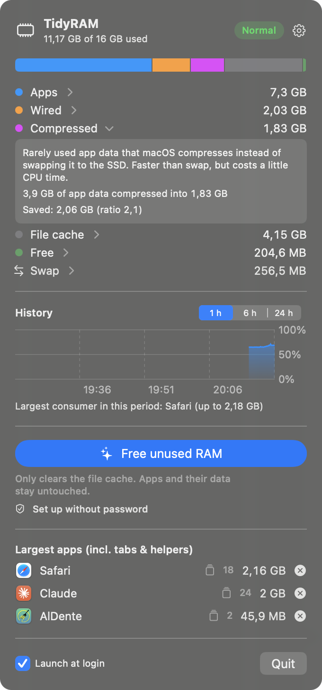
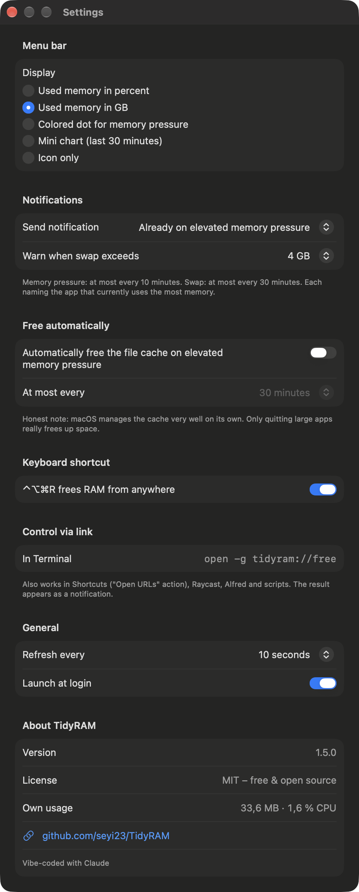

Your Mac's memory, tidy and clear.
A lightweight menu bar app that shows what's really using your RAM and safely frees the file cache, without touching your apps or their data.
brew tap seyi23/tidyram && brew trust seyi23/tidyram && brew install --cask tidyrambrew trust is only needed on Homebrew 7+.

What it does
The same numbers as Activity Monitor, explained in plain language, right in your menu bar.
Memory at a glance
Apps, wired, compressed, file cache, free and swap, plus the real memory pressure straight from the kernel.
Details on click
Expand any category for an explanation and details: GPU memory, compression ratio, purgeable cache, swap activity.
Free unused RAM
Clears only the file cache with Apple's own purge. Optional: set it up once and it never asks for a password again.
Who's eating memory?
Every app including all its tabs and helper processes, so Safari shows its real 3 GB, not 300 MB.
24-hour history
Switch between 1, 6 and 24 hours. Hover to see the time, pressure and the top app at that moment.
Notifications
A heads-up when memory gets critical or swap passes a limit you choose, naming the app that uses the most.
Mini chart in the menu bar
Show percent, GB, a colored pressure dot, a tiny 30-minute chart, or just the icon.
Shortcut & automation
Press ⌃⌥⌘R anywhere, or run open -g tidyram://free from Terminal, Shortcuts, Raycast or Alfred.
English & German
Follows your system language. Adding a language means translating one file.
Safe by design
macOS manages memory very well on its own. TidyRAM respects that.
- Only clears the file cache, i.e. data that's on your SSD anyway.
- Never force-quits apps. The ✕ button quits normally, like ⌘Q, so apps can ask to save.
- Only reads other processes, never modifies them.
- Runs exactly one hard-coded command with admin rights:
/usr/sbin/purge. - No network access, no tracking, settings and history stay on your Mac.

Install
Three ways, all free.
- Download: get
TidyRAM-<version>.zipfrom Releases, unzip, and moveTidyRAM.appto Applications. - Homebrew: use the command above. Update later with
brew upgrade --cask tidyram. - Build it yourself:
git clone https://github.com/seyi23/TidyRAM.git, then./scripts/install.sh.
TidyRAM isn't notarized by Apple, so macOS blocks the first launch once. Allow it in System Settings → Privacy & Security → "Open Anyway". Full documentation · PDF
Vibe-coded with Claude
TidyRAM was built entirely through vibe coding: the idea and requirements came from conversation, and Claude by Anthropic wrote the code, scripts, tests and documentation. The code is thoroughly commented, so have a look yourself, especially at the part that runs with admin rights.